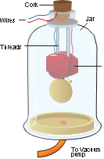
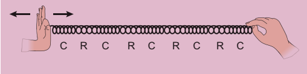
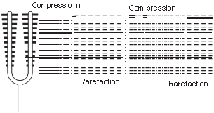
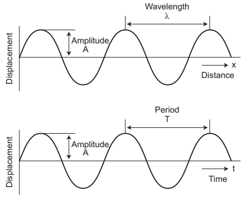
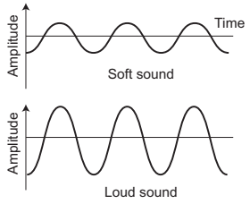
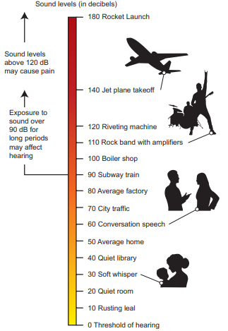
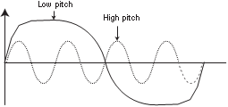
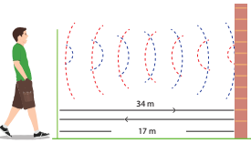
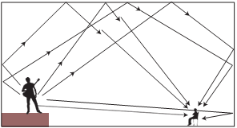
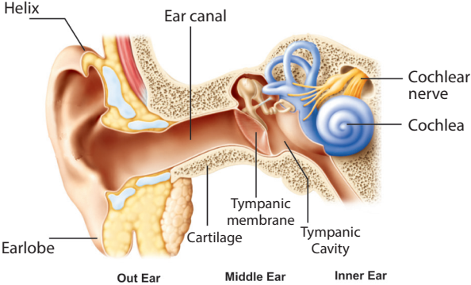

After completing this lesson, students will be able to
understand the properties of sound.
know that sound requires a medium to travel.
understand that sound waves are longitudinal in nature.
explain the characteristics of sound.
gain knowledge about reflection of sound.
explain ultrasonic sound and understand the applications of ultrasonic sound.
Sound is a form of energy which produces sensation of hearing in our ears. Some sounds are pleasant to hear and some others are not. But, all sounds are produced by vibrations of substances. These vibrations travel as disturbances in a medium and reach our ears as sound. Human ear can hear only a particular range of frequency of sound that too with a certain range of energy. We are not able to hear sound clearly if it is below certain intensity. The quality of sound also differs from one another. What are the reasons for all these question mark It is because sound has several qualities. In this lesson we are going to learn about production and propagation of sound along with its various other characteristics. We will also study about ultrasonic waves and their applications in our daily life.
In your daily life you hear different sounds from different sources. But, have you ever thought how sound is produced question mark To understand the production of sound, let us do an activity.
Box item open
Take a tuning fork and strike its prongs on a rubber pad. Bring it near your ear. Do you hear any sound question mark Now touch the tuning fork with your finger. What do you feel question mark Do you feel vibrations question mark box item ends
When you strike the tuning fork on the rubber pad, it starts vibrating. These vibrations cause the nearby molecules to vibrate. Thus, vibrations produce sound.
Sound needs a material medium like air, water, steel etc., for its propagation. It cannot travel through vacuum. This can be demonstrated by the Bell Jar experiment.
An electric bell and an airtight glass jar are taken. The electric bell is suspended inside the airtight jar. The jar is connected to a vacuum pump, as shown in Figure 8.1. If the bell is made to ring, we will be able to hear the sound of the bell. Now, when the jar is evacuated with the vacuum pump, the air in the jar is pumped out gradually and the sound becomes feebler and feebler. We will not hear any sound, if the air is fully removed Bracket OPEN if the jar has vacuum bracket closed.
Figure 8.1 Bell-Jar experiment image was given below

Sound moves from the point of generation to the ear of the listener through a medium. When an object vibrates, it sets the particles of the medium around to vibrate. But, the vibrating particles do not travel all the way from the vibrating object to the ear. A particle of the medium in contact with the vibrating object is displaced from its equilibrium position. It then exerts a force on an adja cent particle. As a result of which the adjacent particle gets displaced from its position of rest. After displacing the adjacent particle the first particle comes back to its original position. This process continues in the medium till the sound reaches our ears. It is to be noted that only the disturbance created by a source of sound travels through the medium not the particles of the medium. All the particles of the medium restrict themselves with only a small to and fro motion called vibration which enables the disturbance to be carried forward. This disturbance which is carried forward in a medium is called wave.
Box item open
Take a coil or spring and move it forward and backward. What do you observe question mark You can observe that in some parts of the coil the turns will be closer and in some other parts the turns will be far apart. Sound also travels in a medium in the same manner. We will study about this now.
A coil of spring image was given below

Box item ends
From the above activity you can see that in some parts of the coil, the turns are closer together. These are regions of compressions. In between these regions of compressions we have regions where the coil turns are far apart called rarefactions. As the coil oscillates, the compressions and rarefactions move along the coil. The waves that propagates with compressions and rarefactions are called longitudinal waves. In longitudinal waves the particles of the medium move to and fro along the direction of propagation of the wave.
Figure 8.2 Sound is a wave image was given below

Sound also is a longitudinal wave. Sound can travel only when there are particles which can be compressed and rarefied. Compressions are the regions where particles are crowded together. Rarefactions are the regions of low pressure where particles are spread apart. A sound wave is an example of a longitudinal mechanical wave. Figure 8.2 represents the longitudinal nature of sound wave in the medium.
Box item open
Listen to the audio of any musical instrument like flute, nathaswaram, tabla, drums, veena etc. Tabulate the differences between the sounds produced by the various sources. Box item ends
A sound wave can be described completely by five characteristics namely amplitude, frequency, time period, wavelength and velocity or speed.
Figure 8.3 Characteristics of sound wave image was given below

The maximum displacement of the particles of the medium from their original undisturbed positions, when a wave passes through the medium is called amplitude of the wave. If the vibration of a particle has large amplitude, the sound will be loud and if the vibration has small amplitude, the sound will be soft. Amplitude is denoted as A. Its SI unit is meter Bracket OPEN m bracket closed.
The number of vibrations Bracket OPEN complete waves or cycles bracket closed produced in one second is called frequency of the wave. It is denoted as n. The SI unit of frequency is s power minus 1 Bracket OPEN or bracket closed hertz Bracket OPEN Hz bracket closed. Human ear can hear sound of frequency from 20 Hz to 20,000 Hz. Sound with frequency less than 20 Hz is called infrasonic sound. Sound with frequency greater than 20,000 Hz is called ultrasonic sound. Human beings cannot hear infrasonic and ultrasonic sounds.
The time required to produce one complete vibration Bracket OPEN wave or cycle bracket closed is called time period of the wave. It is denoted as T. The SI unit of time period is second Bracket OPEN s bracket closed. Frequency and time period are reciprocal to each other Bracket OPEN T = 1 by n bracket closed.
The minimum distance in which a sound wave repeats itself is called its wavelength. In a sound wave, the distance between the centers of two consecutive compressions or two consecutive rarefactions is also called wavelength. The wavelength is usually denoted as lamda Bracket OPEN Greek letter, lambda bracket closed. The SI unit of wavelength is metre Bracket OPEN m bracket closed.
Velocity or speed Bracket OPEN v bracket closed
The distance travelled by the sound wave in one second is called velocity of the sound. The SI unit of velocity of sound is m s power minus 1.
Sounds can be distinguished from one another in terms of the following three different factors.
1. Loudness
2. Pitch
3. Timbre Bracket OPEN or quality bracket closed
Loudness is a quantity by virtue of which a sound can be distinguished from another one, both having the same frequency. Loudness or softness of sound depends on the amplitude of the wave. If we strike a table lightly, we hear a soft sound because we produce a sound wave of less amplitude. If we hit the table hard we hear a louder sound. Loud sound can travel a longer distance as loudness is associated with higher energy. A sound wave spreads out from its source. As it move away from the source its amplitude decreases and thus its loudness decreases. Figure 8.4 shows the wave shapes of a soft and loud sound of the same frequency
Figure 8.4 Soft and loud sound image was given below

The loudness of a sound depends on the intensity of sound wave. Intensity is defined as the amount of energy crossing per unit area per unit time perpendicular to the direction of propagation of the wave.
Figure 8.5 Intensity level of sound image was given below

The intensity of sound heard at a place depends on the following five factors.
1. Amplitude of the source.
2. Distance of the observer from the source.
3. Surface area of the source.
4. Density of the medium.
5. Frequency of the source.
The unit of intensity of sound is decibel Bracket OPEN dB bracket closed. It is named in honour of the Scottish-born scientist Alexander Graham Bell who invented telephone.
Pitch is one of the characteristics of sound by which we can distinguish whether a sound is shrill or base. High pitch sound is shrill and low pitch sound is flat. Two music sounds produced by the same instrument with same amplitude, will differ when their vibrations are of different frequencies. Figure 8.6 consists of two waves representing low pitch and high pitch sounds.
Figure 8.6 Low pitch and high pitch sounds image was given below

Timbre is the characteristic which distinguishes two sounds of same loudness and pitch emitted by two different instruments. A sound of single frequency is called a tone and a collection of tones is called a note. Timbre is then a general term for the distinguishable characteristics of a tone.
The speed of sound is defined as the distance travelled by a sound wave per unit time as it propagates through an elastic medium.
Speed Bracket OPEN v bracket closed = distance by time
If the distance travelled by one wave is taken as one wavelength Bracket OPEN lamda bracket closed, and the time taken for this propagation is one time period Bracket OPEN T bracket closed, then
Speed v = one wavelength Bracket OPEN lamda bracket closed by one time period Bracket OPEN T bracket closed or V = Lamda by T
As T = 1 by n, the speed Bracket OPEN v bracket closed of sound is also written as, v = n lamda.
The speed of sound remains almost the same for all frequencies in a given medium under the same physical conditions.
Box item open
A sound wave has a frequency of 2 kHz and wavelength of 15 cm. How much time will it take to travel 1.5 km question mark
Solution:
Speed, v = n lamda
Here, n = 2 kHz = 2000 Hz
lamda = 15 cm = 0.15 m
v = 0.15 × 2000 = 300 m s power minus 1
Time Bracket OPEN t bracket closed = distance Bracket OPEN d bracket closed by velocity Bracket OPEN V bracket closed
t = 1500 divided by 300 = 5 s
The sound will take 5 s to travel a distance of 1.5 km. box item ends
Box item open
What is the wavelength of a sound wave in air at 20 degree C with a frequency of 22 MHz question mark
Solution:
lamda = v by n
Here, v = 344 m s power minus 1.
n = 22 MHz = 22 into 10 power 6 Hz
lamda = 344/22 into 10 power 6
= 15.64 into 10 power minus 6
m = 15.64 mew m
box item ends
Sound propagates through a medium at a finite speed. The sound of thunder is heard a little later than the flash of light is seen. So, we can make out that sound travels with a speed which is much less than the speed of light. The speed of sound depends on the properties of the medium through which it travels.
The speed of sound is less in gaseous medium compared to solid medium. In any medium the speed of sound increases if we increase the temperature of the medium. For example the speed of sound in air is 330 m s power minus 1 at 0 degree C and 340 m s power minus 1 at 25 degree C .The speed of sound at a particular temperature in various media is listed in Table 8.1
Table 8.1 Speed of sound in different media at 25 degree C.
State |
Medium |
Speed in ms power minus 1 |
Solids |
Aluminum |
6420 |
|
Nickel |
6040 |
|
Steel |
5960 |
|
Iron |
5950 |
|
Brass |
4700 |
|
Glass |
3980 |
Liquids |
Water Bracket OPEN Sea bracket closed |
1531 |
|
Water Bracket OPEN distilled bracket closed |
1498 |
|
Ethanol |
1207 |
|
Methanol |
1103 |
Gases |
Hydrogen |
1284 |
|
Helium |
965 |
|
Air |
340 |
|
Oxygen |
316 |
|
Sulphur dioxide |
213 |
Box item open
Sonic boom: When the speed of any object exceeds the speed of sound in air Bracket OPEN 330 m s power minus 1bracket closed it is said to be travelling at supersonic speed. Bullets, jet, aircrafts etc., can travel at supersonic speeds. When an object travels at a speed higher than that of sound in air, it produces shock waves. These shock waves carry a large amount of energy. The air pressure variations associated with this type of shock waves produce a very sharp and loud sound called the ‘sonic boom’. The shock waves produced by an aircraft have energy to shatter glass and even damage buildings. Box item ends
Box item open
Sound travels about 5 times faster in water than in air. Since the speed of sound in sea water is very large Bracket OPEN being about 1530 m s power minus 1 which is more than 5500km/h power minus 1bracket closed, two whales in the sea which are even hundreds of kilometres away can talk to each other very easily through the sea water. Box item ends
Sound bounces off a surface of solid or a liquid medium like a rubber ball that bounces off from a wall. An obstacle of large size which may be polished or rough is needed for the reflection of sound waves. The laws of reflection are:
The angle in which the sound is incident is equal to the angle in which it is reflected.
Direction of incident sound, the reflected sound and the normal are in the same plane.
Megaphones, loud speakers, horns, musical instruments such as nathaswaram, shehnai and trumpets are all designed to send sound in a particular direction without spreading it in all directions. In these instruments, a tube followed by a conical opening reflects sound successively to guide most of the sound waves from the source in the forward direction towards the audience.
Figure 8.7 Megaphone or horn image was given below
Stethoscope is a medical instrument used for listening to sounds produced in the body. In stethoscopes, these sounds reach doctor’s ears by multiple reflections that happen in the connecting tube.
Use of ear phones for long hours can cause infection in the inner parts of the ears, apart from damage to the ear drum. Your safety is in danger if you wear ear phones while crossing signals, walking on the roads and travelling. Using earphones while sleeping is all the more dangerous as current is passing in the wires. It may even lead to mental irritation. Hence, you are advised to deter from using earphones as far as possible. box item ends
When we shout or clap near a suitable reflecting surface such as a tall building or a mountain, we will hear the same sound again a little later. This sound which we hear is called an echo. The sensation of sound persists in our brain for about 0.1 s.
Hence, to hear a distinct echo the time interval between the original sound and the reflected sound must be at least 0.1 s. Let us consider the speed of sound to be 340 m s power minus 1at 25 degree C. The sound must go to the obstacle and return to the ear of the listener on reflection after 0.1 s. The total distance covered by the sound from the point of generation to the reflecting surface and back should be at least 340 m s power minus 1 into 0.1 s = 34 m.
Thus, for hearing distinct echoes, the minimum distance of the obstacle from the source of sound must be half of this distance That is, 17 m. This distance will change with the temperature of air. Echoes may be heard more than once due to successive or multiple
Figure 8.8 Echo image was given below

reflections. The roaring of thunder is due to the successive reflections of the sound from a number of reflecting surfaces, such as the clouds at different heights and the land.
Box item open
A man fires a gun and hears its echo after 5 s. The man then moves 310 m towards the hill and fires his gun again. If he hears the echo after 3 s, calculate the speed of sound.
Solution:
Distance Bracket OPEN d bracket closed = velocity Bracket OPEN v bracket closed into time Bracket OPEN t bracket closed
Distance travelled by sound when gun fires first time, 2d = v into 5 equation Bracket OPEN 1 bracket closed
Distance travelled by sound when gun fires second time, 2d minus 620 = v into 3 equation Bracket OPEN 2 bracket closed
Rewriting equation Bracket OPEN 2 bracket closed as, 2d = Bracket OPEN v into 3 bracket closed plus 620
Equating Bracket OPEN 1 bracket closed and Bracket OPEN 3 bracket closed, 5v = 3v plus 620 equation Bracket OPEN 3 bracket closed
2v = 620
Velocity of sound, v = 310 m s power minus 1
Box item ends
A sound created in a big hall will persist by repeated reflection from the walls until it is reduced to a value where it is no longer audible. The repeated reflection that results in this persistence of sound is called reverberation. In an auditorium or big hall excessive reverberation is highly undesirable. To reduce reverberation, the roof and walls of the auditorium are generally covered with sound absorbing materials like compressed fiber board, flannel cloths, rough plaster and draperies. The seat materials are also selected on the basis of their sound absorbing properties.
Figure 8.9 Reverberation of sound in an auditorium image was given below

There is a separate branch in physics called acoustics which takes these aspects of sound in to account while designing auditoria, opera halls, theaters etc.
Ultrasonic sound is the term used for sound waves with frequencies greater than 20,000Hz. These waves cannot be heard by the human ear, but the audible frequency range for other animals includes ultrasound frequencies. For example, dogs can hear ultrasonic sound. Ultrasonic whistles are used in cars to alert deer to oncoming traffic so that they will not leap across the road in front of cars.
An important use of ultrasound is in examining inner parts of the body. The ultrasonic waves allow different tissues such as organs and bones to be ‘seen’ or distinguished by bouncing of ultrasonic waves by the objects examined. The waves are detected, analysed and stored in a computer. An echogram is an image obtained by the use of reflected ultrasonic waves. It is used as a medical diagnostic tool. Ultrasonic sound is having application in marine surveying also
Box item open
Ultrasounds can be used in cleaning technology. Minute foreign particles can be removed from objects placed in a liquid bath through which ultrasound is passed.
Ultrasounds can also be used to detect cracks and flaws in metal blocks.
Ultrasonic waves are made to reflect from various parts of the heart and form the image of the heart. This technique is called ‘echo cardiography
Ultrasound may be employed to break small ‘stones’ formed in the kidney into fine grains. These grains later get flushed out with urine.
SONAR stands for Sound Navigation And Ranging. Sonar is a device that uses ultrasonic waves to measure the distance, direction and speed of underwater objects. Sonar consists of a transmitter and a detector and is installed at the bottom of boats and ships.
The transmitter produces and transmits ultrasonic waves. These waves travel through water and after striking the object on the seabed, get reflected back and are sensed by the detector. The detector converts the ultrasonic waves into electrical signals which are appropriately interpreted. The distance of the object that reflected the sound wave can be calculated by knowing the speed of sound in water and the time interval between transmission and reception of the ultrasound.
Let the time interval between transmission and reception of ultrasound signal be‘t’. Then, the speed of sound through sea water is 2dby t = v.
Box item open
A ship sends out ultrasound that returns from the seabed and is detected after 3.42 s. If the speed of ultrasound through sea water is 1531 m s power minus 1, what is the distance of the seabed from the ship question mark
Solution:
We know, distance = speed into time 2d = speed of ultrasound into time
2d = 1531 into 3.42
Therefore d = 5236 by 2 = 2618 m
Thus, the distance of the seabed from the ship is 2618 m or 2.618 km box item ends
This method is called echo-ranging. Sonar technique is used to determine the depth of the sea and to locate underwater hills, valleys, submarine, ice bergs etc.
The electrocardiogram Bracket OPEN ECG bracket closed is one of the simplest and oldest cardiac investigations available. It can provide a wealth of useful information and remains an essential part of the assessment of cardiac patients. In ECG, the sound variation produced by heart is converted into electric signals. Thus, an ECG is simply a representation of the electrical activity of the heart muscle as it changes with time. Usually it is printed on paper for easy analysis. The sum of this electrical activity, when amplified and recorded for just a few seconds is known as an ECG.
How do we hear question mark We are able to hear with the help of an extremely sensitive device called the ear. It allows us to convert pressure variations in air with audible frequencies into electric signals that travel to the brain via the auditory nerve. The auditory aspect of human ear is discussed below.
The outer ear is called ‘pinna’. It collects the sound from the surroundings. The collected sound passes through the auditory canal. At the end of the ear is eardrum or tympanic membrane. When a compression of the medium reaches the eardrum the pressure on the outside of the membrane increases and forces the eardrum inward. Similarly, the eardrum moves outward when a rarefaction reaches it. In this way the eardrum vibrates. The vibrations are amplified several times by three bones Bracket OPEN the hammer, anvil and stirrup bracket closed in the middle ear. The middle ear transmits the amplified pressure variations received from the sound wave to the inner ear. In the inner ear, the pressure variations are turned into electrical signals by the cochlea. These electrical signals are sent to the brain via the auditory nerve and the brain interrupts them as sound.
Figure 8.10 Human ear image was given below

Sound is produced due to vibration.
Sound cannot travel through vacuum.
Sound travels as a longitudinal wave through a material medium.
Sound travels as successive compressions and rarefactions in the medium.
In sound propagation, it is the energy of the sound that travels and not the particles of the medium.
The speed Bracket OPEN v bracket closed, frequency Bracket OPEN n bracket closed, and wavelength Bracket OPEN lamda bracket closed, of sound are related by the equation, v = n lamda.
The law of reflection of sound:
Bracket OPEN 1 bracket closed The angle of incidence, the angle of reflection and normal drawn at the point of incidence all lie in the same plane
Bracket OPEN 2 bracket closed The angle of incidence Bracket OPEN I bracket closed and the angle of reflection Bracket OPEN r bracket closed are always equal.
The speed of sound depends primarily on the nature and the temperature of the transmitting medium.
For hearing distinct echo sound, the time interval between the original sound and the reflected sound must be at least 0.1 s.
The persistence of hearing sound in an auditorium is the result of repeated reflections of sound and is called reverberation.
The amount of sound energy passing each second through unit area is called the intensity of sound.
The audible range of hearing for average human being is in the frequency range of 20 Hz to 20000 Hz
Sound waves with frequencies below audible range are termed as 'Infrasonics' and those above audible range are termed as 'Ultrasonics'.
The SONAR technique is used to determine the depth of the sea and to locate under water hills, valleys, submarines, icebergs, etc.
Amplitude The maximum displacement of a particle.
Compressions The region of increased pressure.
Echo The repetition of sound caused by the reflection of sound.
Frequency Number of waves produced in one second.
Longitudinal wave The wave that propagates with compressions and rarefactions.
Pitch Characteristics of sound based on frequency.
Rarefactions The region of decreased pressure.
Reverberation The repeated reflection that results in persistence of sound is called reverberation.
Timbre Bracket OPENor qualitybracket closed Characteristic which distinguishes the two sounds of same loudness and pitch emitted by two different instruments.
Time period Time taken to produce one wave.
Ultrasonic sound Sound waves with frequencies greater than 20,000Hz.
Wave The propagating disturbance that travels in a medium.
Wavelength The minimum distance in which a sound wave repeats itself